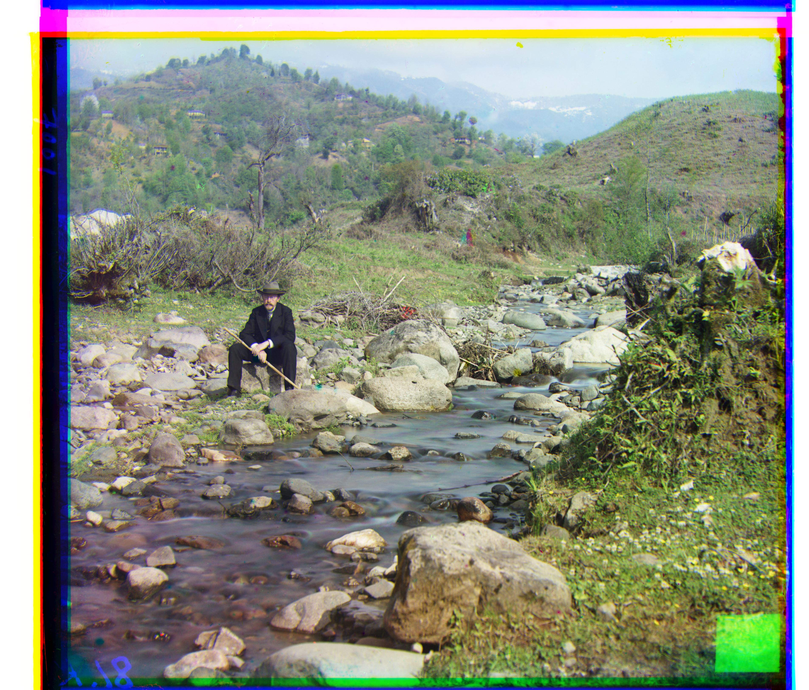

Results
Small Images
Cathedral - Single scale NCC, offsets: b_shift (-2, -5), r_shift (1,
7)

Monastery - Single scale NCC, offsets: b_shift (-2, 3), r_shift (1,
6)

Tobolsk - Single scale NCC, offsets: b_shift (-3, -3), r_shift (1,
4)
Large Images

Church - Pyramid NCC, offsets: g_shift (4, 25), r_shift (-4, 58)
Emir - Pyramid NCC, offsets: g_shift (24, 49), r_shift (56, 104)

Harvesters - Pyramid NCC, offsets: g_shift (17, 60), r_shift (14,
124)
Icon - Pyramid NCC, offsets: g_shift (17, 41), r_shift (23, 89)

Italil - Pyramid NCC, offsets: g_shift (21, 38), r_shift (35, 76)

Lastochikino - Pyramid NCC, offsets: g_shift (-2, -3), r_shift (-9,
75)

Lugano - Pyramid NCC, offsets: g_shift (-16, 41), r_shift (-29, 93)

Melons - Pyramid NCC, offsets: g_shift (10, 81), r_shift (13, 178)

Self_portrait - Pyramid NCC, offsets: g_shift (29, 79), r_shift (37,
176)

Siren - Pyramid NCC, offsets: g_shift (-6, 49), r_shift (-25, 96)
3 generations - Pyramid NCC, offsets: g_shift (14, 53), r_shift (11,
111)
Additional Images from the Prokudin-Gorskii collection
Hut, offsets: g_shift (3, 35), r_shift (4, 98)
Flowers, offsets: g_shift (3, 51), r_shift (-6, 104)